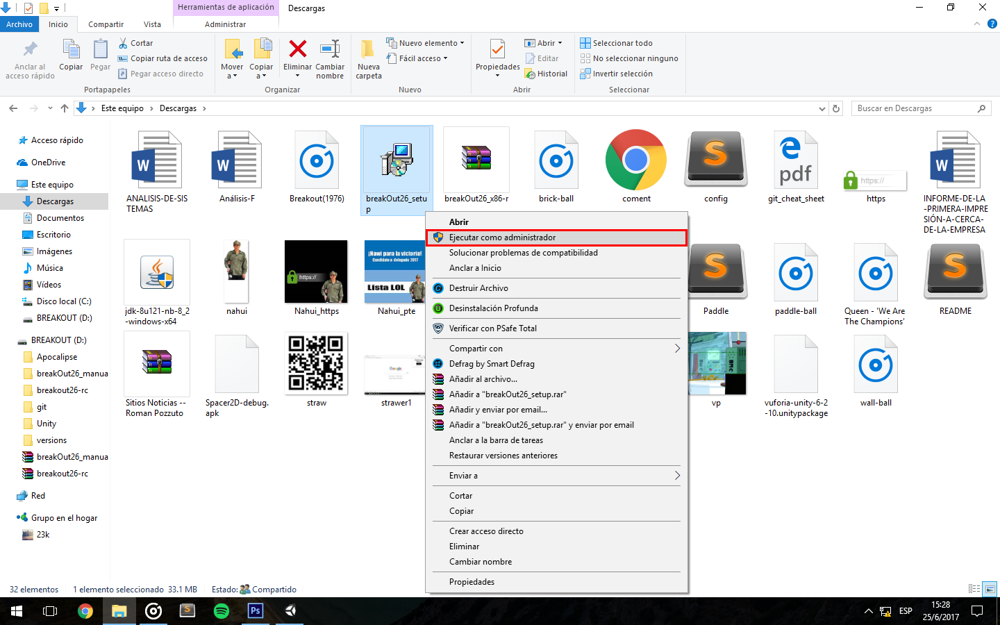
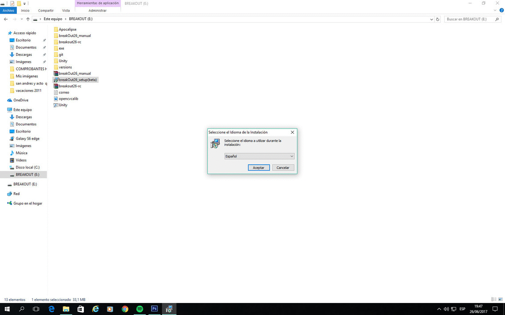
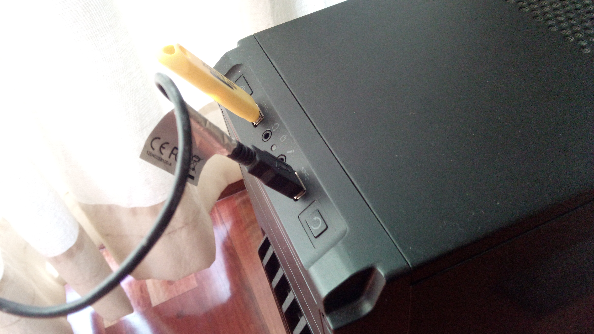

breakout26 (guia de instalacion).
Pasos de instalacion:
-
Paso 1: Descargar aqui el archivo "breakOut26_setup.exe".
-
Paso 2: Una vez descargado el archivo .exe, hacer sobre el click derecho "Ejecutar como administrador" (Se nos abrira un cartel, el cual clickeamos si).

-
Paso 3: Seguir en orden este gif, el cual nos mostrara que hacer en cada ventana del setup.

-
Paso 4: Conectar la webcam en algun puerto USB que este disponible.
